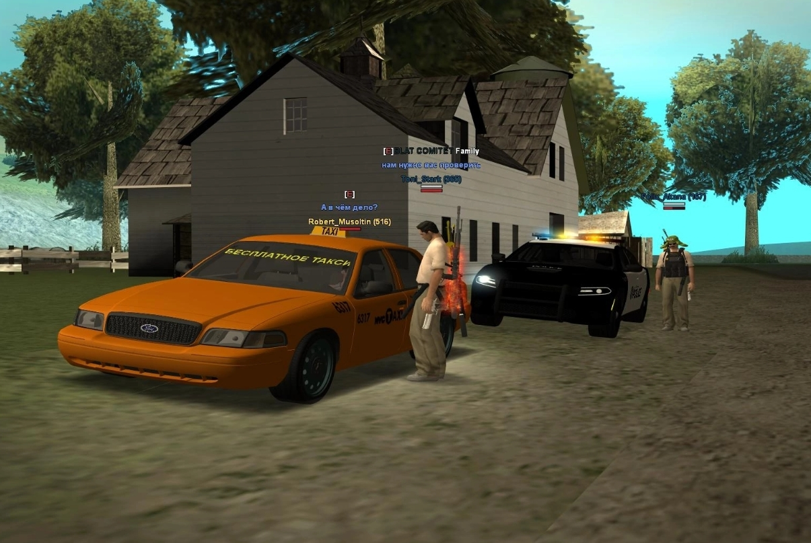
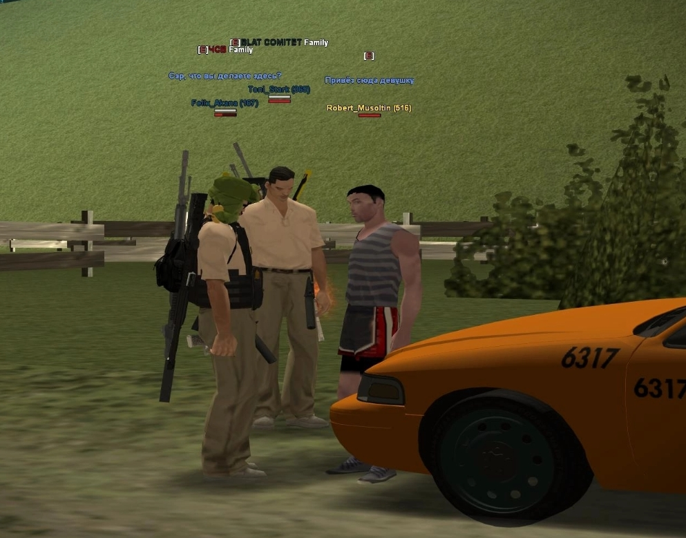
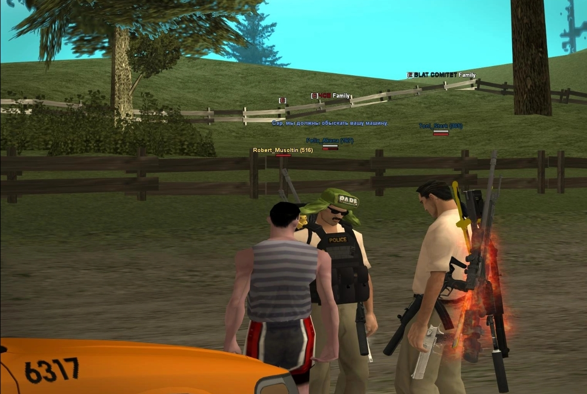
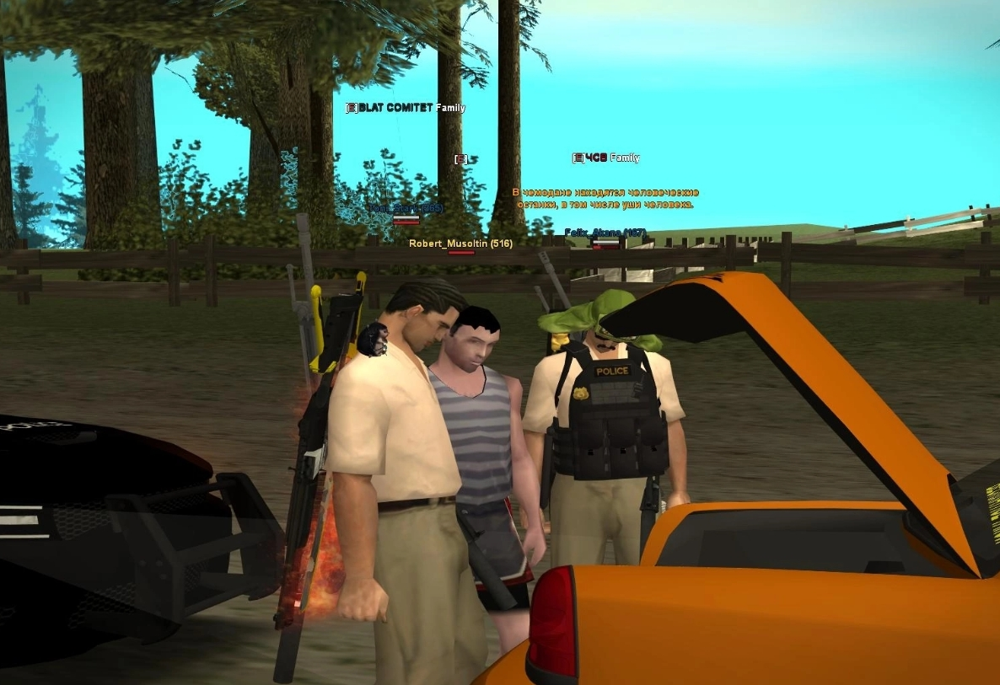
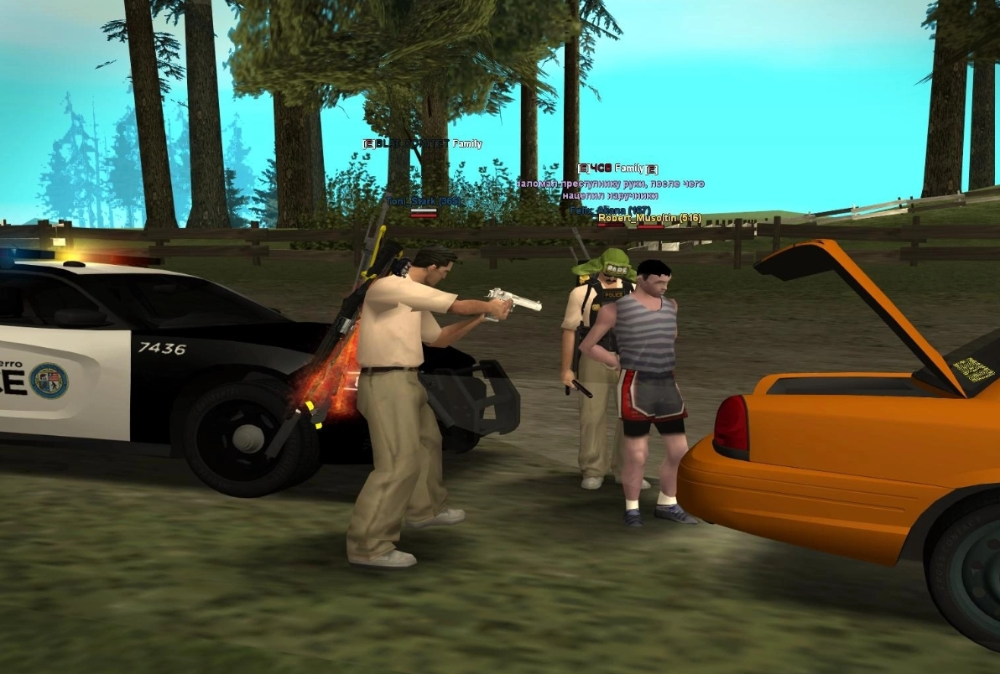
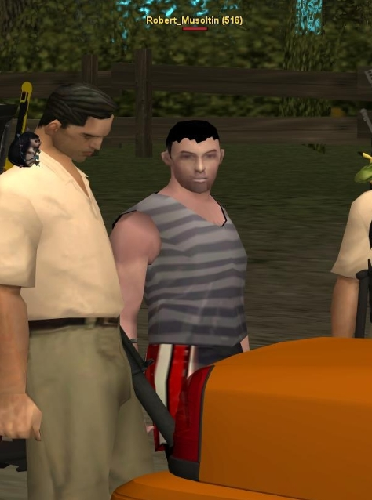
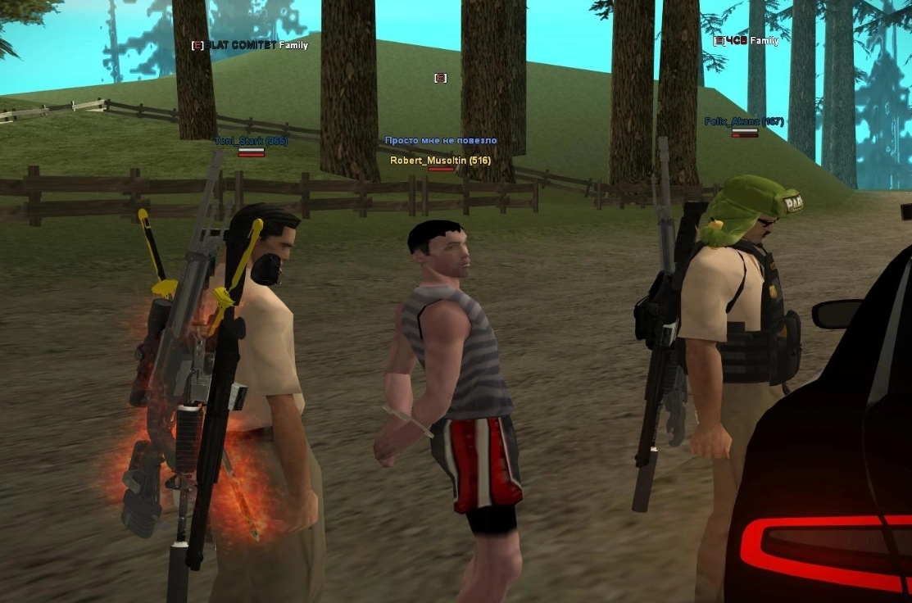

МАНЬЯК-ТАКСИСТ ПОЙМАН: В ЕГО МАШИНЕ НАЙДЕНЫ ЖЕНСКИЕ УШИ
Детективы SFPD раскрыли дело серийного убийцы, который месяцами терроризировал город под видом бесплатного такси
Детективы San Fierro Police Department задержали опасного преступника, который терроризировал город последние месяцы. Маньяк-таксист использовал свою машину для похищения девушек, вывозил их в глухие лесные массивы и жестоко убивал.
Операция по задержанию проходила в загородной зоне. Сотрудники полиции остановили оранжевое такси с номером 6317, на котором было написано "БЕСПЛАТНОЕ ТАКСИ" - именно эта надпись привлекала доверчивых жертв.

На место происшествия прибыли детективы Toni Stark и Felix Akana. Они провели задержание по всем правилам: подозреваемому заломили руки за спину и надели наручники.

При обыске автомобиля следователи обнаружили шокирующую находку - женские отрезанные уши. В багажнике были найдены уши, принадлежащие жертвам преступника. Преступник сразу же был взят под стражу.

Задержанный таксист перевозил девушек в самые отдалённые уголки леса, где совершал свои жестокие преступления. Полиция призывает всех, кто видел подобное такси или становился свидетелем подозрительных ситуаций, обращаться в правоохранительные органы.


ДЕЛО МАНЬЯКА-ТАКСИСТА

ДАННЫЕ ПОДОЗРЕВАЕМОГО
Посажен в San Fierro Police Department
Полосатая майка, спортивные шорты красно-чёрного цвета
Оранжевое такси, гос. номер 6317, надпись "БЕСПЛАТНОЕ ТАКСИ"
Похищение девушек под видом бесплатного такси, вывоз в лес, убийство
ОПИСАНИЕ ПРЕСТУПЛЕНИЯ
Подозреваемый использовал автомобиль марки такси оранжевого цвета (гос. номер 6317) с надписью "БЕСПЛАТНОЕ ТАКСИ" для привлечения жертв. Девушки садились в машину добровольно, после чего подозреваемый вывозил их в лесные массивы за городом, где совершал убийства.
В ходе операции детективы остановили автомобиль в загородной зоне. При проверке документов и осмотре транспортного средства были обнаружены неопровержимые улики причастности водителя к серии жестоких преступлений.
ХОД ЗАДЕРЖАНИЯ
Детективы Toni Stark и Felix Akana провели операцию по задержанию в лесной зоне пригорода San-Fierro. Подозреваемый был обнаружен рядом с оранжевым такси. При попытке сопротивления ему были заломлены руки за спину и надеты наручники.
ВЕЩЕСТВЕННЫЕ ДОКАЗАТЕЛЬСТВА
- Оранжевое такси (гос. номер 6317) с надписью "БЕСПЛАТНОЕ ТАКСИ"
- Женские отрезанные уши, обнаруженные в багажнике
- Следы крови в салоне и багажнике
- Показания свидетелей и детективов SFPD
- Фото- и видеофиксация места преступления
- Наручники, использованные при задержании

ЭТАП 06Задержание завершено